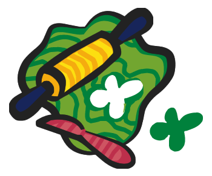
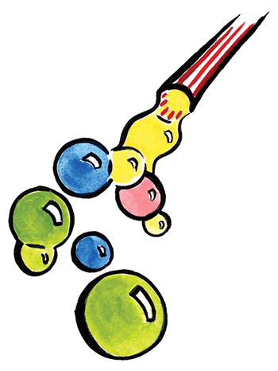
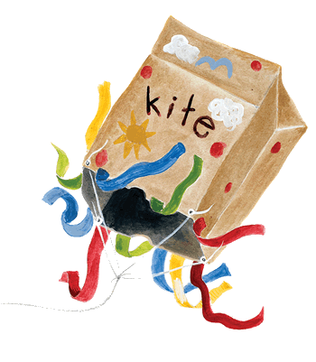

Paper Plate Mask
You will need:
- Paper plates
- Construction paper
- Scissors
- Markers
- String
- Glue
Directions
- Cut two circles out of the paper plate for your eyes.
- Decorate the paper plate with crayons, markers, colored pencils, or even cutouts from magazines.
- Use construction paper to cut out shapes for ears, trunk, or nose.
- Using scissors or a hole punch, make two small holes near the side of the plate to attach string. Pull the string and make a knot, then take both pieces to tie around the back of your child’s head.
Be creative with what you have to decorate the mask. Stickers, pieces of fabric, feathers, or other items make great decorations.
Paper Plate Rabbit Mask
You will need:
- Two paper plates for each mask
- Pink paint or a pink marker
- Scissors
- Glue
- Stapler
- Other markers or paint
- String or elastic
Directions
- Help your child paint or color the inside circle of one plate pink.
- Cut the paper plate in half to make the ears.
- Cut a wedge out of the other paper plate to make the mouth hole. Cut about ¼ of the plate out.
- Cut two eye holes above the wedge.
- Staple the ears to the top of the other plate.
- Punch two small holes on opposite sides of the mask and thread the string or elastic through to make a head strap.
- Let your child decorate the mask with paint, markers, or crayons.
Put on the masks and have fun pretending to be rabbits. Happy hopping!
Papier-mache Hats
You will need:
- One large balloon per hat
- Old newspaper
- Flour glue (see directions)
- Scissors
- String or elastic
- Paint
Directions
- Make the flour glue by mixing one cup of flour into one cup of water until it is runny. Boil four cups of water and add in the flour-water mixture. Simmer for three minutes. Let cool.
- Blow up the balloons.
- Help your child tear the newspaper into thin strips.
- Dip strips of newspaper into the flour glue and cover the top of the balloon. You will need to make at least layers to have a sturdy hat. You can let the layers dry each time or do them all at once.
- Let the hat dry for a few days.
- Pop the balloon and trim the edges of the hat. Help your child decorate with paint. You can also glue on construction paper ears to make an animal hat.
- Poke small holes in opposite edges of the hat and put the string or elastic through to make a chin strap.
Wear the hats and have a parade or act out a play or story!
Cornstarch and Soda Clay Dough
You will need:
- 2 cups baking soda
- 1 cup cornstarch
- 1 1/4 cups cold water
Directions
- Combine all ingredients in saucepan, stirring until smooth.
- Bring to boil and boil one minute, stirring until clay is the consistency of mashed potatoes. Pour out onto a cookie tray and cover with a damp cloth until cool.
- Knead lightly, adding food coloring, if desired. Use immediately or store, wrapped airtight, in the refrigerator.

Salt Dough
You will need:
- 1 cup of salt
- 1 cup of flour
- 1/2 cup of water (may add more)
Directions
- In a large bowl, combine the salt and the flour.
- Make a well in the salt/flour mixture and add the water.
- Knead until smooth and shape into a ball. When not in use, wrap in plastic or store in an airtight container.
HINT: To get softer dough you can add more flour. Add more salt to get more texture. To add color to your dough, add food coloring or paint. Knead to get an even color.
Egg Carton Flowers
You will need:
- Egg cartons (either cardboard or Styrofoam)
- Scissors
- Paint or markers
- Pipe cleaners
Directions
- Cut the cups from the egg carton. Cut four or five petals from the open ends of the cup so that it looks like a tulip. You can bend the petals out for a different look.
- Have your child decorate the cups by painting or coloring them. Let paint dry.
- Poke a small hole in the bottom of each cup.
- Push a pipe cleaner through the hole and bend or knot it to hold it in place as the flower stem.
- You can make leaves with other pipe cleaners if desired.
You can make a whole garden or a bouquet to put in a vase! Help your child count the flowers you make and talk about the different colors.
Coffee Filter Butterfly
You will need:
- Coffee filters
- Food coloring
- Dropper or small paintbrush
- Small bowls to hold the colors and water
- Clothes pins
- Markers
- Pipe cleaners
- Glue
Directions
- Mix food coloring with water in small bowls.
- Spread the coffee filter out flat and help your child drop or paint the colored water onto it.
- Let the filter dry.
- Have your child decorate the clothes pin and draw eyes on it.
- Scrunch the filter in the middle to make the butterfly's wings.
- Insert the filter into the clothespin.
- Cut and bend the pipe cleaner to make antenna and glue to the clothespin.
Have fun making these butterflies fly around the house or outside!

Colored Bubbles
You will need:
- 1 cup granulated soap or soap powder
- 1 quart warm water
- Liquid food coloring
- Plastic straws
- Small juice cans
Directions
- Dissolve soap in warm water.
- Stir in food coloring until desired color is attained.
- Give each child a can about 1/3 full of mix and a plastic straw to blow the bubbles.
(Please be careful not to drink the bubble solution!)
Potato Prints
You will need:
- Potatoes
- Poster or tempura paint (not watercolor)
- Paper
- Pencil
- Sharp knife
- Paper plates
Directions
- Cut potatoes into halves or thirds.
- Help your child draw different designs in pencil on the cut surfaces of the potatoes. Try drawing animals, or practice writing letters and numbers! Can you make enough stamps so that your child can stamp their name?
- Use the knife to cut out the designs. Make sure the knife stays out of the reach of your child!
- Pour a thin layer of different colors of paint onto paper plates.
- Help your child dip the potato stamps into paint and press them onto paper.
Enjoy making fun pictures or use letter stamps to practice spelling simple words!

Paper Bag Kites
You will need:
- Large brown paper grocery bag
- Strong string
- Scissors
- Hole punch
- A number of paper ring reinforcements (the kind you use on paper in binders from any office supply store. You could also substitute masking tape.)
- School glue or paste
- Paint (any kind)
- Crayons, markers, or colored pencils
- Paper streamers or crepe paper that you can cut into strips
- A few found objects (bits of paper, glitter, buttons — nothing too heavy)
Directions
- Begin by taking the hole punch and making four holes in the top of the paper bag— one in each of the corners. Add paper ring reinforcements to the holes, or put a small piece of masking tape over the hole and poke through with a pencil. This will ensure that your holes don't tear through.
- Next, cut two lengths of string about 30" each.
- Tie each end of the strings through a hole in the bag. The goal is to create two loops.
- Next, cut another piece of string — again around 30". Loop this new piece of string through the two loops you created and tie in a knot. This piece of string will become the handle of your kite.
- You are now ready to decorate the paper bag kite using paint, markers, or whatever else you desire. You can paint designs on the kite or turn the kite into a fish by adding eyes, gills, and fins. You can glue different items to the kite but be sure not to load the kite down with heavy items -- or it will have a hard time staying up in the air.
- Use paper streamers as kite tails and glue them to the bottom of the paper bag. You can make your own streamers by cutting crepe paper into strips. Another nifty streamer idea is to take plastic bags and cut them into strips.
- Once the glue and paint is dry, the kite can fly. Hold on tightly to the string handle and run so that the wind catches the kite. When the bag fills with air it will float and flutter behind you.
As a variation, you can add a longer handle string to the kite so it will fly higher in the air.